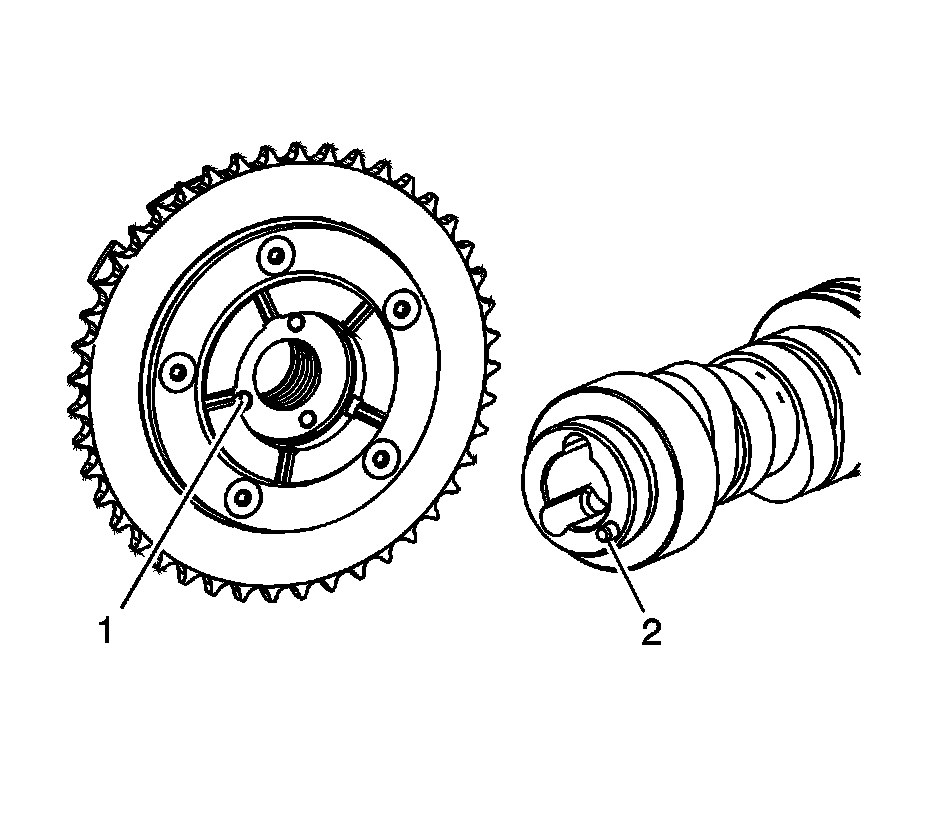
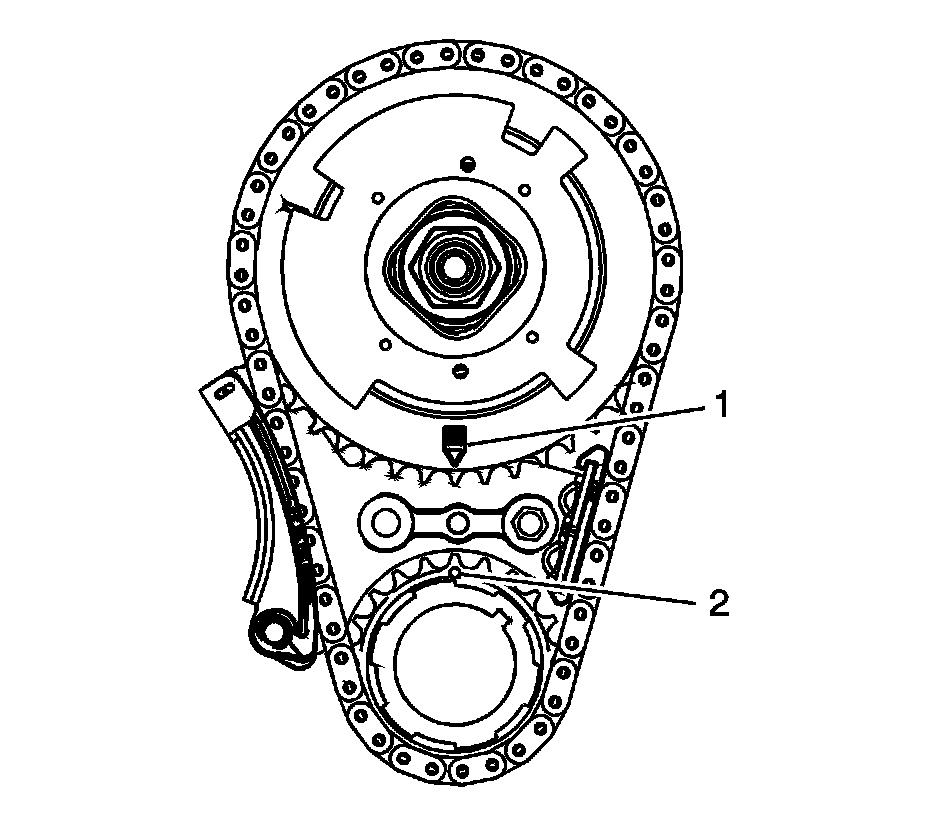

Timing Component Alignment Marks: Locations
Timing Component Alignment Marks (LY6/L76/L92)
Important:
^ Properly locate the CMP actuator onto the locating pin of the camshaft.
^ The sprocket teeth and timing chain teeth must mesh.
^ The camshaft and the crankshaft sprocket alignment MUST be aligned properly.
^ Do not use the CMP solenoid valve again. Install a NEW CMP valve during assembly.
Identify the alignment hole (1) in the rear face of the CMP actuator and the locating pin (2) on the front face of he camshaft.

Align the CMP actuator so the timing mark is in the 6 o'clock position.
Install the CMP actuator (235) and timing chain (208). Align the hole in the face of the CMP actuator with the locating pin on the front face of the camshaft.

Caution: Do not push or pull on the reluctor wheel of the camshaft position (CMP) actuator during removal or installation. The reluctor wheel is retained to the front of the CMP actuator by 3 roll pins. Pushing or pulling on the wheel may dislodge the wheel from the front of the actuator. The actuator return spring is under tension and may rotate the dislodged reluctor wheel, causing personal injury.
Use care to install the actuator completely onto the front of the camshaft. Position your fingers onto the face of the actuator sprocket and push the actuator onto the front of the camshaft. Never push on the reluctor wheel when attempting to install the actuator.

Place a straight edge across the front face of the engine block and inspect for proper installation of the CMP actuator and timing chain. With the CMP actuator properly and completely installed onto the front of the camshaft, the timing chain will not protrude beyond the front face of the engine block.

Install a NEW CMP actuator valve (234). With the CMP actuator properly positioned onto the camshaft, the CMP actuator solenoid valve can be threaded completely into the camshaft using light hand pressure. Tighten by hand until snug.

Inspect the sprockets for proper alignment. The mark on the CMP (1) actuator sprocket should be located in the 6 o'clock position and the mark on the crankshaft sprocket (2) should be located in the 12 o'clock position.

Remove the EN 46330.

Tighten the CMP actuator solenoid valve.
1. Tighten the bolt a first pass to 65 N.m (48 lb ft).
2. Tighten the bolt a final pass an additional 90 degrees using J 45059.

Remove the J 42386-A (1) and bolts.